雲龍寺/東京都八王子市
八王子の外れ、住宅と畑が半々の典型的な郊外の風景。そんな中に一際目立つ塔がある。
雲龍寺の五重の塔である。
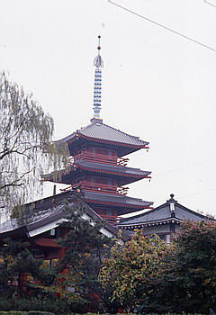
山門にたどり着く。門には4つも額が掛かっており、変態チックなオーラを外の世界に向けて放っている。
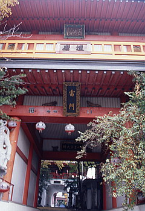
門を潜り五重の塔の下のトンネルを潜り本堂の前に立つ。なんなんだ、ここは、すごい、すごすぎる。
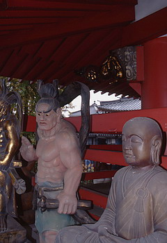 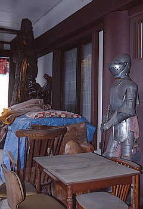
本堂や寺務所、客殿などコンクリート造の建物はいたって普通。強いて言えば五重の塔が少しやりすぎといった程度なのだが、とにかくモノが溢れている。境内のあらゆるところにモノが積まれているのだ。
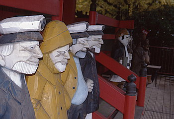 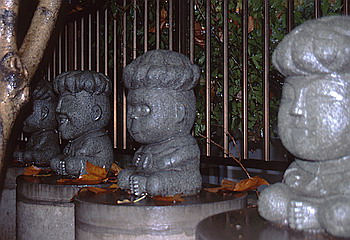
それは石でできた観音さまや羅漢、水子地蔵などなのだが、みな新しいのと置かれ方が無造作なのとで仏像というより、単なるモノ扱いなのだ。
そしてその横には中国物産展などで見かける虎の置物の巨大バージョン、ついにはテーブルや椅子までもが積まれている。横浜とかの土産物でよく売ってる木彫りの船乗りとか海賊とかの人形、あれなんて言うんだか知らないけど、あれの2ｍ位のが並んでるのとか西洋の兜鎧などを見るに至っては、もう白昼夢を見ているかのような気さえしてくる。 もう、まるで古道具屋かフリーマーケットの世界。
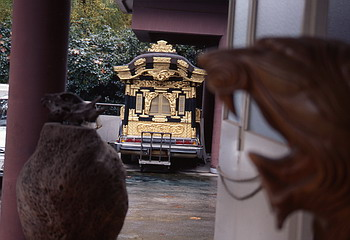 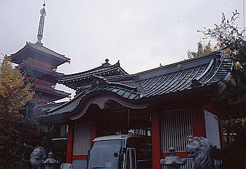
ここの住職か何かのコレクションなんだろうか、溢れかえったモノ達が境内を侵食している。
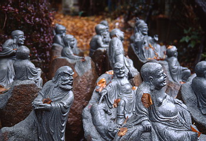
裏門などは門の内側にわざわざ棚をつくってまで、木彫りの像を並べてある。さらに通りひとつ挟んだ墓地の方にまでモノ達は侵食を続け、こりゃあ檀家の人達も大変だろうなあ状態に陥っている。
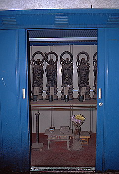
寺務所を覗き込むと、玄関の正面に仏像が奉られており、さらにその二階にも仏像が奉られており、さらに一階の奥の方にも何か奉ってある様だ。
ここだけで既に普通の小さな寺3つ分。建物の外には置いとくスペースも無くなったか、ヨドコウの物置の中にも祭壇をしつらえてお地蔵さんを奉ってある。しかも勿論これらはこの寺の御本尊ではない。
で、本堂へ。本堂のまわりをズラリとモノ達が囲んでいる。特に本堂右横の2ｍ位の四天王らしき像はキテる。
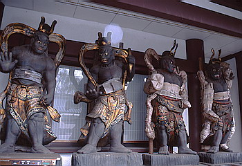
他のモノ達は皆いかにも中国での大量生産品（といっても工業生産品ではなく、10億の人海戦術なんだけど）って感じなんだけど、これだけは違う。素朴といえば聞こえはいいが、稚拙な技術とデカい目と変なプロポーションがやたらと気持ち悪い。
そういえばこの芸風、入り口の門の中にあった仁王さまと同じだ。剥き目君と名付けることに決定。
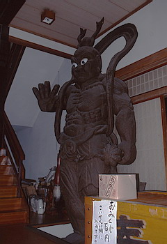 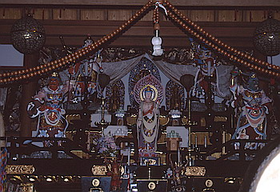
本堂の中に入る、と、いきなり第3の剥き目君が左右に立っている。薄暗い中に目だけが浮かび上がっている。
コワい。そしてスポットライトがあたる須弥段を見ると極彩色に彩られた御本尊が。さすが仏像コレクターの寺だけあって気合い入りまくり。仏像オールスター状態だ。
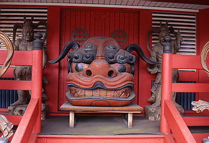 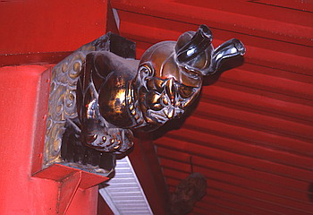
本堂を出て五重の塔を見上げる。すべての扉の上に達磨の面が掛けてある。
そういえば山門の数ある額字の中にも一言「達磨」なる額があった。これは怪しいと思い塔への階段を登った。塔の内部は薄暗いので目をこらす。上の方から視線を感じ、見上げるとそこには・・・
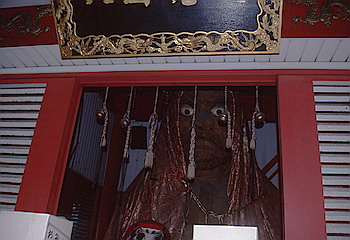
剥き目君スタイルの達磨大師がいた。やっぱり薄暗い中に目だけが浮かんでいる。しかもデカい。座像で3ｍ位か、天井に頭がぶつかりそうだ。そして床の上には埃を被った達磨さんがゴロゴロと。
シュールすぎる。まるでつげ義春の「ねじ式」か「ゲンセンカン主人」にでも出て来そうな寺だ。
情報提供はへりおすさんです
1997.12.
珍寺大道場 HOME